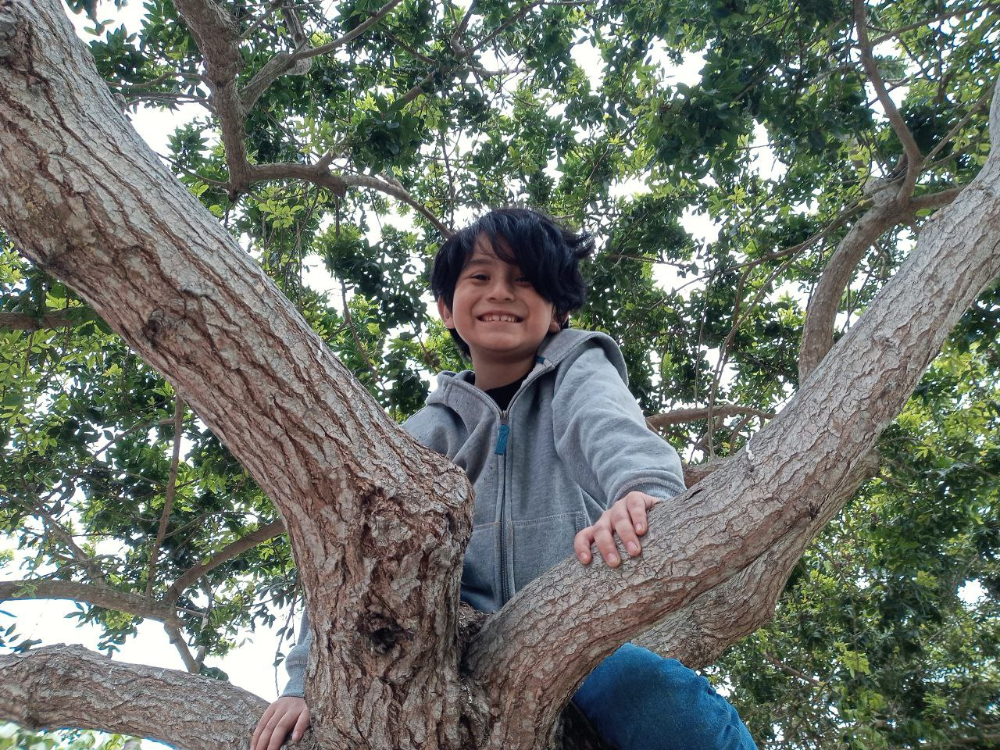

Sebas
wars
Un joven jedi llamado Sebastián Skywalker está próximo a celebrar su noveno cumpleaños.

Una nueva esperanza aparece para la Resistencia, quienes buscan valientes Jedi dispuestos a luchar por una buena causa.

Únete y forma parte de nuestra alianza, en un picnic lleno de alegría que promete derrotar a la Estrella del aburrimiento. ¡Contamos contigo!